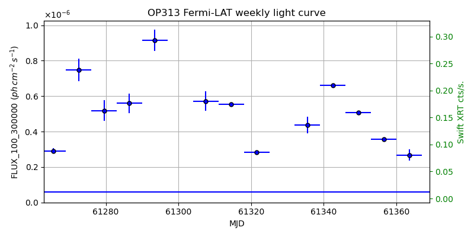
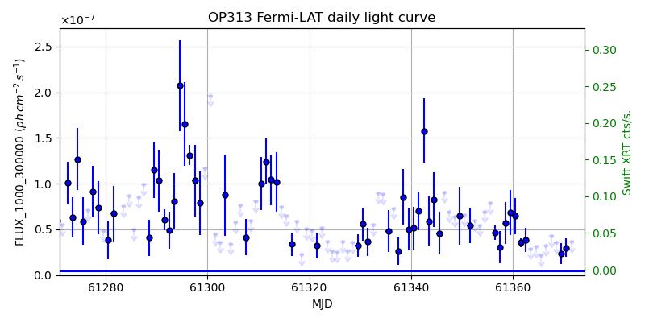

LAT Lightcurve site: https://fermi.gsfc.nasa.gov/ssc/data/access/lat/msl_lc/source/OP_313
Swift site: https://www.swift.psu.edu/monitoring/source.php?source=1308+326
NED: Query
Time of last update of this page: UT: 2026-11-28 16:25 (MJD: 61372.685)
| Property | Value |
|---|---|
| R.A. | 13:10:28.56 |
| Dec. | 32:20:42.0 |
| z | 0.996 |
| 3FGL SpectrumType | LogParabola |
| 3FGL PL Index | |
| 3FGL Flux_100_300000 | 6.07e-08 1 / (s cm2) |
| 3FGL Flux_1000_300000 | 4.05e-09 1 / (s cm2) |
| 3FGL Flux >200 GeV | 2.33e-12 1 / (s cm2) |
| 3FGL Extrap. Crab >200 GeV | 0.01 |
| 3FGL Flux After EBL Absorption >200GeV | 3.98e-14 1 / (s cm2) |
| 3FGL EBL Crab Fraction >200GeV | 0.00 |
| MJD | dMJD | Flux | dFlux | Frac3FGL | FracCrab>200GeV | EBLFracCrab>200GeV |
|---|---|---|---|---|---|---|
| 61367.50 | 0.50 | 3.58e-07 | 9.58e-09 | 5.90 | 0.06 | 0.00 |
| 61368.50 | 0.50 | 2.57e-07 | 3.93e-08 | 4.23 | 0.04 | 0.00 |
| 61369.50 | 0.50 | 1.89e-07 | 6.76e-09 | 3.11 | 0.03 | 0.00 |
| 61370.50 | 0.50 | 1.36e-07 | 5.89e-08 | 2.23 | 0.02 | 0.00 |
| 61371.50 | 0.50 | 1.54e-07 | 6.06e-08 | 2.54 | 0.02 | 0.00 |

| MJD | dMJD | Flux | dFlux | Frac3FGL | FracCrab>200GeV | EBLFracCrab>200GeV |
|---|---|---|---|---|---|---|
| 61335.50 | 3.50 | 4.36e-07 | 4.67e-08 | 7.18 | 0.07 | 0.00 |
| 61342.50 | 3.50 | 6.60e-07 | 4.78e-09 | 10.88 | 0.11 | 0.00 |
| 61349.50 | 3.50 | 5.07e-07 | 5.89e-09 | 8.35 | 0.08 | 0.00 |
| 61356.50 | 3.50 | 3.57e-07 | 2.38e-09 | 5.88 | 0.06 | 0.00 |
| 61363.50 | 3.50 | 2.68e-07 | 3.10e-08 | 4.41 | 0.04 | 0.00 |

| MJD | dMJD | Flux | dFlux | Frac3FGL | FracCrab>200GeV | EBLFracCrab>200GeV |
|---|---|---|---|---|---|---|
| 61367.50 | 0.50 | 4.25e-08 | 0.00e+00 | 0.00 | 0.00 | 0.00 |
| 61368.50 | 0.50 | 3.55e-08 | 0.00e+00 | 0.00 | 0.00 | 0.00 |
| 61369.50 | 0.50 | 2.35e-08 | 1.19e-08 | 5.82 | 0.06 | 0.00 |
| 61370.50 | 0.50 | 3.00e-08 | 1.01e-08 | 7.42 | 0.07 | 0.00 |
| 61371.50 | 0.50 | 3.67e-08 | 0.00e+00 | 0.00 | 0.00 | 0.00 |

| MJD | dMJD | Flux | dFlux | Frac3FGL | FracCrab>200GeV | EBLFracCrab>200GeV |
|---|---|---|---|---|---|---|
| 61335.50 | 3.50 | 4.04e-08 | 2.75e-09 | 9.98 | 0.10 | 0.00 |
| 61342.50 | 3.50 | 7.93e-08 | 3.65e-09 | 19.61 | 0.19 | 0.00 |
| 61349.50 | 3.50 | 3.44e-08 | 2.51e-09 | 8.50 | 0.08 | 0.00 |
| 61356.50 | 3.50 | 4.31e-08 | 8.03e-09 | 10.64 | 0.10 | 0.00 |
| 61363.50 | 3.50 | 2.16e-08 | 1.85e-09 | 5.34 | 0.05 | 0.00 |
--------------------------------------------------------- Using user-supplied coords: 13:10:28.56 32:20:42.0 2000 --------------------------------------------------------- FLWO UT night of: 2026-11-29 Local Sid. @ Midnight: 04:08 Sunset (-15.0) (local, UT): 18:31 01:31 Sunrise (-15.0) (local, UT): 05:53 12:53 Moonrise (local, UT): 21:57 04:57 Moonset (local, UT): Moon phase: 0.72 --------------------------------------------------------- AzTime LSID UT Obj_el Obj_az Mn_el Mn_az Sep. --------------------------------------------------------- 18:31 22:39 01:31 -16.7 327.0 -32.9 32.1 60.4 19:01 23:09 02:01 -19.9 332.8 -29.4 38.9 60.1 19:31 23:39 02:31 -22.5 339.0 -25.4 45.0 59.8 20:01 00:09 03:01 -24.5 345.6 -21.0 50.6 59.5 20:31 00:39 03:31 -25.7 352.5 -16.2 55.6 59.2 21:01 01:09 04:01 -26.1 359.5 -11.1 60.2 59.0 21:31 01:39 04:31 -25.8 6.6 -5.4 64.5 58.7 22:01 02:09 05:01 -24.7 13.5 0.4 68.5 58.5 22:31 02:39 05:31 -22.8 20.2 5.8 72.2 58.3 23:01 03:10 06:01 -20.3 26.4 11.6 75.8 58.0 23:31 03:40 06:31 -17.1 32.3 17.5 79.4 57.8 00:01 04:10 07:01 -13.5 37.7 23.6 82.9 57.6 00:31 04:40 07:31 -9.3 42.6 29.7 86.5 57.5 01:01 05:10 08:01 -3.9 47.1 35.8 90.3 57.3 01:31 05:40 08:31 0.5 51.3 42.0 94.4 57.2 02:01 06:10 09:01 5.3 55.0 48.1 99.1 57.0 02:31 06:40 09:31 10.6 58.5 54.2 104.7 56.9 03:01 07:10 10:01 16.1 61.7 60.1 111.7 56.8 03:31 07:40 10:31 21.8 64.7 65.6 121.1 56.6 04:01 08:10 11:01 27.6 67.4 70.5 134.7 56.5 04:31 08:40 11:31 33.6 70.0 74.0 154.7 56.4 05:01 09:11 12:01 39.7 72.4 75.2 181.1 56.3 05:31 09:41 12:31 45.8 74.7 73.6 206.8 56.3 05:53 10:02 12:53 50.3 76.3 71.0 221.2 56.2 --------------------------------------------------------- Dark hours >55 deg.: 0.00